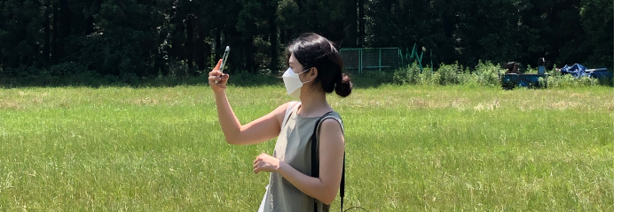
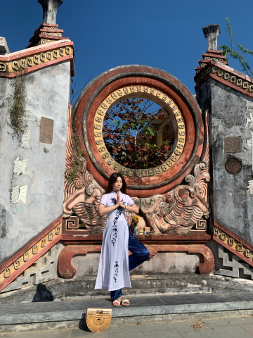

CREATIVE
DEVELOPER

01/
저는 포기하지 않는 퍼블리셔 주다혜입니다.
내 앞에 마주한 어려움을 그냥 지나치려 하지 않고, 적극적으로 나서서 해결하고자 합니다. 시간이 필요한 복잡한 문제가 발생하더라도 천천히 다시 생각해보고, 최종적으로 일을 완수해 나가는 데에 보람을 느낍니다.
모르는 것, 어려운 것, 시도해보지 않았던 것을 겁먹지 않고 차근차근 해결해 나가며 내 것으로 만들겠습니다.
손으로 만드는 것을 좋아해서 지금까지 5년 동안 취미로 섬유예술 타피스트리를 제작하고 있습니다.
하나의 타피스트리 작품이 완성되기까지 실을 타피 틀에 거는 것, 실의 색깔을 정하고 구하는 것, 중간에 마음에 들지 않는다면 다시 풀고 새롭게 시작하는 것 등 많은 시간을 필요로 하는 작업을 하면서 조급함은 내려놓고 인내심을 키웠습니다. 타피스트리를 통해 배운 삶의 태도를 업무에서도 적용하여 끊임없는 연구와 성실함으로 만족스러운 결과물을 만들어 내도록 노력하겠습니다.
MORE ABOUT ME02/
POSSIBILITY
01
성실성
성실하게 목표하는 바를 이루어 낼 수 있습니다.
02
책임감
맡아서 해야할 일은 의무감을 가지고 해낼 수 있습니다.
03
소통
의견을 주고 받으며 원활한 관계를 유지할 수 있습니다.
04
발전가능성
안주하지 않고 배우며 발전해 나갈 수 있습니다.